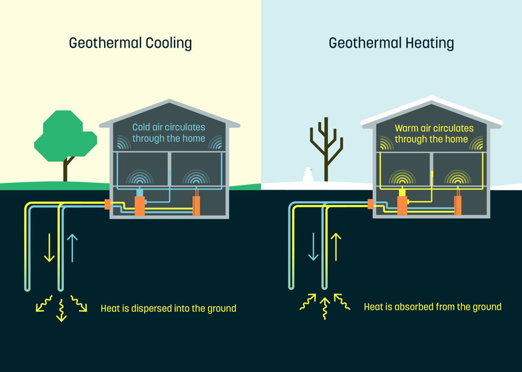

Geothermal Heating and Cooling
Grenergy Editorial Research
Published October 1, 2023

Geothermal energy pumps are quieter, more energy efficient, low maintenance, and allow you to have cheaper hot water!
Grenergy Editorial Research
Published October 1, 2023
Geothermal energy pumps are quieter, more energy efficient, low maintenance, and allow you to have cheaper hot water!
Did you know that the AC and heating systems in our households actually hold many negative consequences towards the environment? Not only does it leak certain refrigerants which are stronger greenhouse gasses, the large electricity input used to start up these systems causes more carbon dioxide into the atmosphere. According to Heating and Cooling, almost 25% of the produced energy worldwide is for heating and cooling systems and other commercial uses. However, an up and coming and environmentally friendly solution is geothermal heating and cooling. Not only can you limit the carbon footprint left but switching to this system can provide many families with a more energy efficient and cost effective solution. Here’s some information on how to use it.
Geothermal systems can be utilized in two ways. One is to heat up the house during the colder months of the year by using the average heat in the ground. This is because the temperature 5 feet underground will remain constant year round, meaning the temperature will be warmer than the outside temperature in the colder months, while the temperature might be colder than the temperature outside during the hotter months. This is why this same system can be used to heat and cool the house.
This system requires 2 key parts. A geothermal heat pump and a buried pipe containing heat transfer fluid. The pump is usually placed where a regular AC or heating system may be. It would be connected to the pipe which will be pumping the transfer fluid through the ground. This fluid slowly absorbs the ground heat and loops back up to the pump. The heat is then pumped into the house.
This system is reliable all year round, providing energy efficient heating and cooling, along with the minimal environmental impact. Consider installing a geothermal heat pump system to stabilize the temperature of your homes through harnessing the stable temperature of the earth.